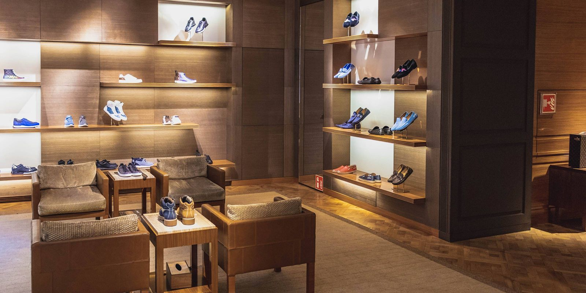

Butiksrengøring på Lolland-Falster
– et skinnende butiksmiljø, der giver kunderne lyst til at komme igen
Kundeanmeldelser
Det siger kunderne på Lolland-Falster om Schier Rengøring
Et rent indtryk fra første skridt
Et velholdt salgsareal gør en tydelig forskel for både kunder og personale. Når der bliver gjort rent løbende, står butikken skarpt fra indgang til kasse, og det bliver lettere at holde en ensartet standard – også når tempoet er højt.
En løsning, der passer til jeres åbningstider
I en butik bliver gulve, glas og kontaktflader hurtigt påvirket af kundetrafik, varer, kurve/vogne og hyppig berøring ved kasse, prøverum og indgang. Med en fast aftale kan I få gjort rent før åbning, efter lukketid eller på tidspunkter, hvor det forstyrrer mindst. Det giver ro i driften og et butiksmiljø, der føles indbydende hele dagen.
Professionel butiksrengøring, der passer til jeres hverdag
Vi kan hjælpe butikker i Nykøbing F og på resten af Lolland-Falster med at holde et pænt og præsentabelt udtryk i hverdagen. Indsatsen tilpasses jeres butikstype, kundetryk og ønsker, så I får en løsning, der fungerer i praksis – ikke kun på papiret. Læs mere om os og vores måde at arbejde på.
Derfor vælger butikker os til butiksrengøring
- Fast team og stabil kvalitet
I får som udgangspunkt en fast assistent eller et fast team, så standarden bliver ensartet, og vi lærer jeres rutiner og fokusområder at kende. - Skræddersyet plan
Frekvens og opgaver tilpasses butiksstørrelse, branche og kundetryk. - Fokus på det kunderne bemærker
Indgang, salgsareal, kassezone, prøverum og glas prioriteres, så butikken tager sig godt ud hele dagen. - Kontaktflader i fokus
Ekstra opmærksomhed på håndtag, gelændere, kortterminal, kurve/vogne (efter aftale), knapper, spejle og andre flader, der berøres ofte. - Diskret og fleksibel service
Der kan typisk gøres rent uden for åbningstid, så personale og kunder møder ind til en butik, der står skarpt. - Miljøvenlige valg, når det giver mening
Metoder og produkter kan planlægges med hensyn til arbejdsmiljø og omgivelser – uden at gå på kompromis med resultatet.
Tryghed og kvalitet i praksis
- Fast kontaktperson og tydelig kommunikation før, under og efter opstart.
- Nøgle- og alarmrutiner aftales og følges efter jeres retningslinjer.
- Tjekliste og standard, så opgaverne udføres ensartet.
- Løbende kvalitetstjek og mulighed for hurtige justeringer, hvis behov ændrer sig.
- Diskretion i baglokaler, lager og personalerum.
Hvad kan indgå i en aftale om butiksrengøring?
Indholdet tilpasses jeres butik, men her er typiske opgaver, som mange vælger i en fast aftale:
Salgsareal og kassezone
- Støvsugning og/eller gulvvask efter gulvtype og trafik.
- Aftørring af frie overflader (diskområder, hylder i kundehøjde, udvalgte udstillingsflader).
- Pletfjerning ved behov, så butikken fremstår velholdt.
- Aftørring af udvalgte kontaktflader (fx håndtag, kortterminal og afskærmninger).
Indgangsparti, vindfang og glas
- Opfriskning af indgangsparti, så det tager sig godt ud – også i våde perioder.
- Fjernelse af synligt støv/snavs ved dørpartier og måtter (efter aftale).
- Aftørring af glas og spejle i synlige zoner (efter aftale, omfang afhænger af behov).
- Ekstra fokus på ganglinjer og indgangsarealer i vinterhalvåret, så gulvene holdes pæne, selv når der saltes udenfor og snavs trækkes med ind.
Prøverum og spejle
- Gulve, spejle og udvalgte flader, så området fremstår pænt og indbydende.
- Kontaktflader som bænke, kroge og greb aftørres efter aftale.
Lager og baglokale
- Støvsugning/fejning og enkel gulvpleje i ganglinjer og arbejdszoner.
- Aftørring af udvalgte flader efter aftale (fx pakkeborde).
Personalerum og tekøkken
- Bordplader, vask og stænkzoner.
- Affaldshåndtering og nye poser efter aftale.
- Gulve og generel opfriskning.
Toiletter og eventuelle badefaciliteter
- Toilet, håndvask og armatur.
- Spejle, overflader og gulve.
- Genopfyldning efter aftale (toiletpapir, sæbe, papir m.m.).
Ekstra ydelser (kan tilføjes)
- Periodisk hovedrengøring (fx før kampagner, sæsonskifte eller inventar-omrokering).
- Gulvpleje og behandling, hvis I vil forlænge gulvets levetid og forbedre udtrykket.
- Vinduespudsning efter aftale.
- Ekstra indsats i travle perioder (udsalg, events, højtider).
Sådan starter vi op
- Kort dialog og evt. besigtigelse – vi afklarer kvadratmeter, åbningstider, kundetryk og fokuszoner.
- Plan og tjekliste – I får en klar aftale om opgaver, frekvens og standard.
- Opstart med kvalitet i fokus – vi finjusterer, så resultatet sidder rigtigt fra start.
- Løbende opfølgning – behov ændrer sig; planen kan justeres uden bøvl.
Et butiksmiljø der holder niveau – også når hverdagen er travl
Når der bliver gjort rent efter en fast plan, bliver det nemmere at holde et pænt udtryk gennem dagen og sikre en stabil standard, som kunderne kan mærke. Det giver et bedre helhedsindtryk, mere ro i driften og en butik, der står skarpt – også i de perioder, hvor der er ekstra pres på.
FAQ om butiksrengøring
Hvad koster butiksrengøring?
Prisen afhænger af butikstype, størrelse, frekvens og opgaveindhold. Et tilbud bliver mest retvisende, når opgaver og standard er afstemt med jeres behov.
Kan I gøre rent uden for åbningstid?
Ja, det kan som regel aftales, så arbejdet ikke forstyrrer kunder eller personale.
Kan vi få en fast assistent?
Det er ofte den bedste løsning, fordi det giver stabil kvalitet og faste rutiner i hverdagen.
Hvor ofte bør en butik have gjort rent?
Det afhænger især af kundetryk, gulvtype, vareflow og hvor meget indgangspartiet belastes af vejret. Mange vælger en fast grundplan (fx en eller flere faste dage) og supplerer med ekstra indsats i travle perioder, så standarden er høj både til hverdag og ved spidsbelastning.
Kan I hjælpe med ekstra indsats ved kampagner eller udsalg?
Ja, der kan ofte planlægges ekstra indsats – fx før et event, ved udsalg eller efter ombygning/omrokering.
Hvordan sikrer I ens kvalitet over tid?
Med fast team, tydelige tjeklister og løbende opfølgning, så standarden holdes – og justeres hurtigt, hvis noget ændrer sig.
Få et uforpligtende tilbud på butiksrengøring
Fortæl kort om jeres butik, ønsket frekvens og hvilke områder der er vigtigst. Så vender vi tilbage med et tilbud på en løsning, der passer til jeres butik på Lolland-Falster.
Telefon: 50 50 76 65 | E-mail: my@schier.dk
Folemarken 59, 4800 Nykøbing F | CVR-nr. 38199633